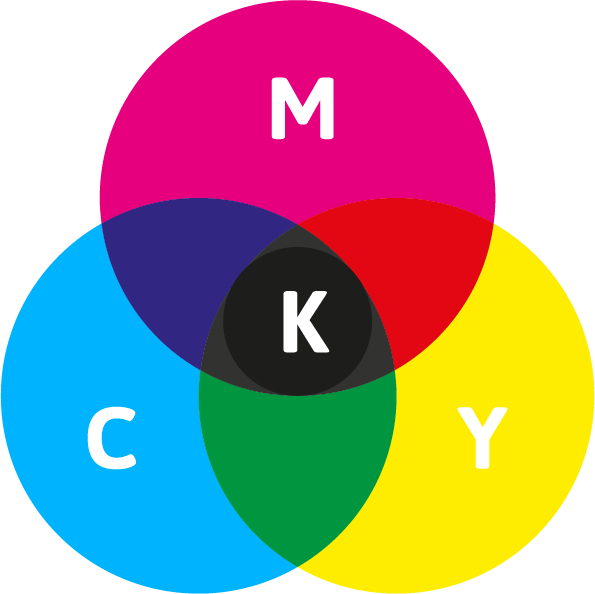

RGB
RGB staat voor Rood, Groen en Blauw. Dit kleurmodel wordt gebruikt voor schermen, zoals computers, telefoons en televisies.

Kleurmodellen
RGB
RGB staat voor Rood, Groen en Blauw. Dit kleurmodel wordt gebruikt bij beeldschermen. Een scherm maakt kleuren door rood, groen en blauw licht met verschillende sterktes te mengen.
Als alle kleuren uit staan, zie je zwart. Als alle kleuren op hun hoogste sterkte staan, zie je wit.
Extra uitleg en weetjes
Wil je meer weten over afbeeldingen, pixels en RGB? Bekijk dan dit YouTube-filmpje:
Bekijk het filmpje over pixels en RGB
CMYK
CMYK staat voor Cyaan, Magenta, Yellow en Key (zwart). Dit kleurmodel wordt vooral gebruikt bij printers. De kleuren worden gemaakt met inkt op wit papier.
De inkt absorbeert een deel van het licht. Cyaan, magenta en geel kunnen samen niet perfect zwart maken. Daarom wordt er ook zwarte inkt toegevoegd.
Waarom zijn er twee kleurmodellen?
RGB werkt met licht en CMYK werkt met inkt. Omdat licht en inkt kleuren op een andere manier mengen, kunnen kleuren op een scherm er anders uitzien dan wanneer ze worden afgedrukt.
CMYK
CMYK wordt gebruikt bij printers. Het werkt met gekleurde inkt op wit papier. De K staat voor zwart. Zwarte inkt zorgt ervoor dat donkere delen duidelijker worden afgedrukt.
